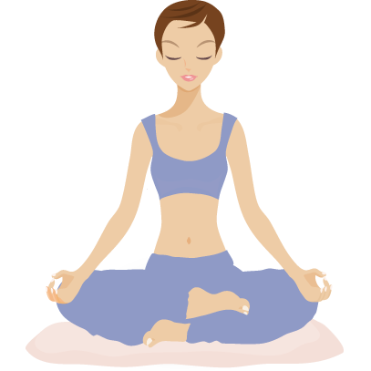

Страница саморазвитии!
Добро пожаловать!

ЧТО ТАКОЕ МЕДИТАЦИЯ
Чаще всего под термином "медитация " мы подразумеваем особый вид упражнений,
которые входят в состав духовно - религиозных или оздоровительных практик,
а также необычное психическое состояние, которые возникают в процессе их
выполнения.
Второе значение медитации - особый тип углубленных размышлений о чем - либо.
Они сопровождаются осознанным отстранением от любых внешних обстоятельств и раздражителей.
Часто мы встречаем использование техник медитации или ее элементов в
психотерапии и на различных тренингах. В этом случае она вступает психилогической практикой,
помогающей людям обрести как духовные, так и физические здоровье. Третье значение
медитации - комплекс психофизических упражнений альтернативной медицины.
ДЛЯ ЧЕГО НУЖНО МЕДИТАЦИЯ
В чем заключается главная цель медитации? Бесспорно, в познании себя,
обретении внутренней гармонии.
Класическая медитация, на " духовном " уровне сознания, те самым определить истинные для
себя оценности, поставить новые цели жизнь новыми смыслами. Человек учиться искать решение
не во внешнем мире и обстоятельствах, а внутри себя. Это не способ для расслабления, а зачастую
трудный путь, трубующий от человека выхода из зоны комфорта.
Если рассматривать медитацию как майндфулнесс, то есть медитацию " светскую",
без какого - либо религозного или эзотерического подсмыла, то главной целью практики
будет повышение качества жизни во всех смыслах: умственном, психологическом, физическом.
Здесь во главу угла ставится развитие нейропластичности - мозг сталкивается с новыми вызовами и
быстрее усваивает полезный опыт.

СКОЛЬКО МЕДИТИРОВАТЬ НОВИЧКУ?
Советы начинающим: Заниматься нужно 2 раза в день: утром - чтобы активировать разум, и вечером
- чтобы избавиться от стресса и утомления. Для начала достаточно выделить на медитацию
по 15 минут утром и вечером.
ЧТО ЕСЛИ МЕДИТИРОВАТЬ КАЖДЫЙ ДЕНЬ?
Она учит фокусироваться, снимает стресс, помогает избавиться от вредных привычек,
тренирует память и внимательность, улучшает самоконтороль, снижает давление
и частоту пульса, нормализует обмен веществ и многое другое.
ЧТО БУДЕТ ПОСЛЕ МЕДИТАЦИИ?
Исследование показывают, сто медитация снижает воспалительные процессы в мозге
тем самым уменьшая риск рака и других заболеваний.
В ЧЕМ ЗАКЛЮЧАЕТСЯ СУТЬ МЕДИТАЦИИ?
Медитацией принято называть комплекс практик, цель которых - повышение осознанности
и концентрации. Такие "ментальные тренировки ", благодаря которым человек может самостоятельно
вернуться в ресурсное состояние, перебороть стресс или сосредочиться все более популярным.

КАК ПРАВИЛЬНО ДЕЛАТЬ МЕДИТАЦИЮ?
ОСНОВНЫЕ ШАГИ К ПРАКТИКЕ МЕДИТАЦИИ
Закройте глаза и сделайте несколько глубоких вдохов. Сосредоточьтесь на своем
дыхании и его ощущениях при вдохе и выдохе. Позвольте мыслям приходить и уходить,
не осуждая и не привязываясь к ним. Если вы отвлекаетесь, просто верните свое внимание к дыханию.
СКОЛЬКО В ДЕНЬ НУЖНО МЕДИТИРОВАТЬ?
Эксперты рекомендуют заниматься медитацией осознанности не менее 10 минут в день в целях более
эффективного использование когнитивных функций мозга в течение дня. Если 10 минут в день для вас
слишком много, вы можете попробовать занятия медитацией по 5 минут в день,
постепенно увеличивая продолжительность занятий.
КАК МЕДИТИРОВАТЬ ДОМА САМОМУ?
Техники медитации
1. Зажгите свечу, поставьте ее перед собой . Смотрите на пламя, не отрывая взгляд, не
двигайте зрачками.
2. Сконцентрируйтесь на дыхании.
3. Закройте глаза, представьте себя в вместе, где вы бы хотели сейчвс очутиться.
4. Представьте, что не вы стремитесь достичь медитации, а кто - то,
кому вы очень сильно доверяете.